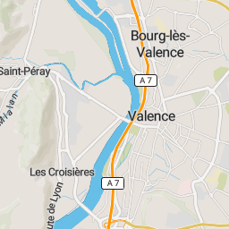
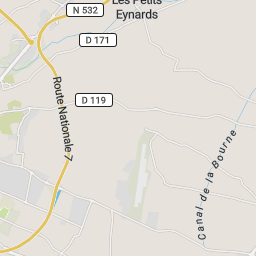

+
−
Tiles courtesy of
jawgmaps
- Map data
© OpenStreetMap contributors
, under ODbL.
— À propos
Grenoble INP
par
GrenobleINP
— À propos
| Visualiser les données
Zoomer
Dézoomer
Visualiser les données
À propos
Chercher un lieu
Itinéraire à partir de ce lieu
Fermer